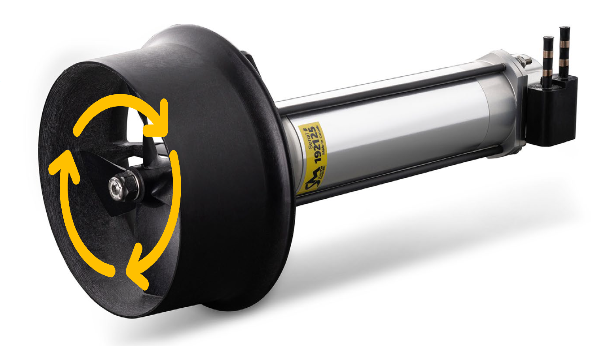

Sturgeon 200 Thruster API
Revision 1.1
1. Introduction
This document outlines communication requirements for use of SEAMOR Sturgeon 200 Thruster.
This communication protocol is based on MODBUS over RS-485. MODBUS based debugging tools and resources can be used for testing and validation, but no guarantee is made by SEAMOR for full compatibility with existing MODBUS devices or libraries. Terminology consistent with MODBUS standards is used throughout this document. Please refer to https://www.modbus.org/specs.php for more details.
1.1 Node Types
1.1.1 Client
The client is the network device that initiates all communication, typically a processor that will also communicate on other networks.
Important
Only one Client is allowed per network
Note
Client is referred to as Master in Legacy MODBUS documentation
1.1.1 Server
A Server is a network device that responds to requests from a Client. Typically end node devices on the network.
Important
Maximum 63 Servers on a network
Note
Server is referred to as Slave in Legacy MODBUS documentation. Slave ID is used in this document to identify Servers.
2. Network Requirements
2.1 Communication Port settings
| Setting | Value |
|---|---|
| Baud Rate | 115200 |
| Start Bit | 1 |
| Stop Bit | 1 |
| Parity Bit | None |
2.2 Message Gap
Minimum 20 ms required between messages on the network (received or transmitted).
2.3 Timeout
Any controllable action (eg. thruster rotation) will be maintained for a maximum of 1 second after successful message receipt. After timeout expiry the device will stop actions until the next valid command is recieved.
3. Message Types
3.1 Request/ Response

3.1.1 Frame Layouts
3.1.1.1 Client - Read Request
| Byte # | 1 | 2 | 3 | 4 | 5 | 6 | 7 | 8 |
|---|---|---|---|---|---|---|---|---|
| Name | Slave ID | Function ID | Register Address MSB | Register Address LSB | # Registers MSB | # Registers LSB | CRC LSB | CRC MSB |
3.1.1.2 Server - Read Reponse
| Byte # | 1 | 2 | 3 | 4 | 5 | ... | n-1 | n |
|---|---|---|---|---|---|---|---|---|
| Name | Slave ID | Function ID | # Bytes Read | Data MSB x | Data LSB x | ... | CRC LSB | CRC MSB |
3.1.1.3 Client - Write Request
| Byte # | 1 | 2 | 3 | 4 | 5 | 6 | 7 | 8 |
|---|---|---|---|---|---|---|---|---|
| Name | Slave ID | Function ID | Register Address MSB | Register Address LSB | Data MSB | Data LSB | CRC LSB | CRC MSB |
3.1.1.4 Server - Write Response
| Byte # | 1 | 2 | 3 | 4 | 5 | 6 | 7 | 8 |
|---|---|---|---|---|---|---|---|---|
| Name | Slave ID | Function ID | Register Address MSB | Register Address LSB | Data MSB | Data LSB | CRC LSB | CRC MSB |
3.1.2 Byte Definitions
3.1.2.1 Slave ID
The unique 8-bit identifier for individual Servers. The configured device identifier valid in range of 0x01-0x3F (0x40-0xFE invalid, 0xFF indicates unconfigured).
Slave ID 0x00 is reserved to indicate Broadcast Message (See Client Broadcast Definition).
Important
The default Slave ID is 0xFF before receiving a Write Request setting the Slave ID.
3.1.2.2 Function ID
The unique 8-bit identifier to represent operation requested of the Server.
| Description | ID code |
|---|---|
| Read Read/Write Register | 0x03 |
| Read Read-only Register | 0x04 |
| Write Read/Write Register | 0x06 |
Note
Other MODBUS Function IDs are not supported.
3.1.2.3 Register Address
The 16-bit register address for target operation, offset from database start register. Split into Most Significant Byte (MSB) and Least Significant Byte (LSB).
3.1.2.4 Number Of Registers
The 16-bit value representing the number of registers in read request operation. Split into Most Significant Byte (MSB) and Least Significant Byte (LSB).
3.1.2.5 Number of Bytes Read
The 8-bit value representing number of bytes returned.
Note
Each register contains 2 bytes
3.1.2.6 Data
The 16-bit contents read from, or to be writtten into, target register. Split into Most Significant Byte (MSB) and Least Significant Byte (LSB).
Note
Read requests of greater than 1 register start at requested address
3.1.2.7 CRC
The 16-bit Cyclic Redundancy Check (CRC) value of frame. Split into Most Significant Byte (MSB) and Least Significant Byte (LSB).
Standard MODBUS CRC-16-ANSI (CRC-16-IBM) is used with algebraic polynomial 0xA001 (reverse of 0x8005).
Important
Sent in standard MODBUS little-endian format (CRC LSB first, CRC MSB second)
3.2 Client Broadcast

Broadcast Messaging allows for simultaneous communication with all Servers on the network.
Note
Servers do not respond to Broadcast Messages
Important
The maximum Broadcast Message length is 24 bytes
3.2.1 Frame Layout
| Byte # | 1 | 2 | 3 | 4 | 5 | 6-22 | n-1 | n |
|---|---|---|---|---|---|---|---|---|
| Name | Slave ID | Function ID | Register Address MSB | Register Address LSB | Broadcast ID | Data Payload | CRC LSB | CRC MSB |
3.2.2 Byte Definitions
3.2.2.1 Slave ID
The unique 8-bit identifier for individual Servers, configured device identifier valid in range of 0x01-0x3F (0x40-0xFE invalid, 0xFF indicates unconfigured).
Note
Byte 1 in the frame is Slave ID 0x00 indicating a Broadcast Message, all other Slave ID used in frame refer to specific Server
3.2.2.2 Function ID
The unique 8-bit identifier to represent operation requested of the Server.
Important
Only supported Broadcast Message function code is Write Read/Write Register: 0x06
3.2.2.3 Register Address
The 16-bit register address for target operation, offset from the database start register. Split into Most Significant Byte (MSB) and Least Significant Byte (LSB).
3.2.2.4 Broadcast ID
The unique 8-bit identifier to indicate frame structure.
Note
Currently only Broadcast ID 0x01 is supported
3.2.2.5 Data Payload
The number of bytes and function specific to Broadcast ID (See Broadcast Payload Structure Definition)
3.2.2.6 CRC
The 16-bit Cyclic Redundancy Check (CRC) value of frame. Split into Most Significant Byte (MSB) and Least Significant Byte (LSB).
Standard MODBUS CRC-16-ANSI (CRC-16-IBM) is used with algebraic polynomial 0xA001 (reverse of 0x8005).
Important
Sent in standard MODBUS little-endian format (CRC LSB first, CRC MSB second)
3.2.3 Broadcast Payload Structure
3.2.3.1 Broadcast ID 0x01
Used to broadcast direction and duty cycle to multiple Servers. Valid for 1-8 Servers simultaneously (maximum data payload 3-17 bytes).
Note
Variable frame lengths are supported
| Data Payload Byte # | 1 | 2 | 3 | 4 | 5 | ... | 16 | 17 |
|---|---|---|---|---|---|---|---|---|
| Name | Payload # Bytes | Payload Byte 1A | Payload Byte 1B | Payload Byte 2A | Payload Byte 2B | ... | Payload Byte 8A | Payload Byte 8B |
3.2.3.1.1 Payload Number of Bytes
Number of payload bytes in the frame.
3.2.3.1.2 Payload Byte xA
| Bits | 0-1 | 2-7 |
|---|---|---|
| Function | Thruster Direction | Slave ID |
| Description | 0b00 = reverse |
See Slave ID definition |
3.2.3.1.3 Payload Byte xB
| Bits | 0-7 |
|---|---|
| Function | Thruster Duty Cycle |
| Description | 0.5% / bit |
Important
Maximum Thruster Duty Cycle is 100% (0xC8)
3.3 Exception Responses
Server Reponse to Client Requests
| Byte # | 1 | 2 | 3 | 4 | 5 |
|---|---|---|---|---|---|
| Name | Slave ID | Function ID (Function ID | 0x80) | Exception Code | CRC LSB | CRC MSB |
Note
The function codes for exception frames are Boolean OR with 0x80 and standard function codes
4 Register Addresses
4.1 Read/Write Registers
| Address | Offset | Byte | Bit Name | Description |
|---|---|---|---|---|
| 40001 | 0 | LSB | Slave ID | Unique Server Identifier |
| 40001 | 0 | MSB | N/A | - |
| 40002 | 1 | LSB | Thruster Orientation | 0x00:Left hand propeller (forward = counter-clockwise) |
| 40002 | 1 | MSB | N/A | - |
| 40003 | 2 | LSB | N/A | - |
| 40003 | 2 | MSB | N/A | - |
| 40004 | 3 | LSB | Thruster Duty Cycle | 0.5% / bit |
| 40004 | 3 | MSB | Thruster Direction | 1 = forward, 0 = reverse |
| 40005 | 4 | LSB | N/A | - |
| 40005 | 4 | MSB | N/A | - |
Note
The propellor rotation direction reference from nozzle end of thruster

Clockwise Rotation
4.2 Read-Only Register Addresses
| Address | Offset | Byte | Name | Bit Resolution | Offset | Description |
|---|---|---|---|---|---|---|
| 30001 | 0 | LSB | N/A | - | - | - |
| 30001 | 0 | MSB | Peripheral ID | - | - | Unique Identifier for Device Type |
| 30002 | 1 | LSB | N/A | - | - | - |
| 30002 | 1 | MSB | N/A | - | - | - |
| 30003 | 2 | LSB | Voltage | 0.25 V/bit | 0 | Measured Input Voltage |
| 30003 | 2 | MSB | Current | 0.05 A/bit | 0 | Measured Current Consumption |
| 30004 | 3 | LSB | Internal Temperature | 1 °C/bit | -50 °C | Motor Driver Internal Temperature |
| 30004 | 3 | MSB | N/A | - | - | - |
| 30005 | 4 | LSB | N/A | - | - | - |
| 30005 | 4 | MSB | N/A | - | - | - |
4.3 Exception Response Codes
A unique 8-bit identifier used in response from Server to Client indicating success or error details.
| Title | Exception Code | Description |
|---|---|---|
| Illegal Function | 0x01 | The Server does not support requested function |
| Illegal Data Address | 0x02 | The data address not valid for requested operation |
| Illegal Data Value | 0x03 | The data value not valid for requested operation |
| Server Failure | 0x04 | An unrecoverable failure occured while performing requested operation |
| ACK | 0x05 | The Server has accepted the request, some duration of time should be expected before complete |
| Server Busy | 0x06 | The Server is currently busy processing a prior request |
| NACK | 0x07 | The Server cannot perform the requested operation |
5 Example Message Exchanges
5.1 Read Request - Example 1
Read Request for Voltage and Current from Slave ID 16:
| Slave ID | Function ID | Register Address MSB | Register Address LSB | # Registers MSB | # Registers LSB | CRC LSB | CRC MSB |
|---|---|---|---|---|---|---|---|
| 0x10 | 0x04 | 0x00 | 0x02 | 0x00 | 0x01 | 0x93 | 0x4B |
Response from Server to the Client:
| Slave ID | Function ID | # Bytes Read | Data MSB | Data LSB | CRC LSB | CRC MSB |
|---|---|---|---|---|---|---|
| 0x10 | 0x04 | 0x02 | 0x04 | 0x40 | 0x46 | 0x03 |
Slave ID 16 responds current 0.2A and volatge 16V.
5.2 Read Request - Example 2
Read Request for Duty Cycle and Direction from Slave ID 16:
| Slave ID | Function ID | Register Address MSB | Register Address LSB | # Registers MSB | # Registers LSB | CRC LSB | CRC MSB |
|---|---|---|---|---|---|---|---|
| 0x10 | 0x03 | 0x00 | 0x03 | 0x00 | 0x01 | 0x77 | 0x4B |
Response from Server to the Client:
| Slave ID | Function ID | # Bytes Read | Data MSB | Data LSB | CRC LSB | CRC MSB |
|---|---|---|---|---|---|---|
| 0x10 | 0x03 | 0x02 | 0x01 | 0x64 | 0x44 | 0x3C |
Slave ID 16 responds Duty cycle 50% in the forward direction.
5.3 Read Request - Example 3
Read multiple registers, Slave ID and Thruster orientation from Slave ID 16:
| Slave ID | Function ID | Register Address MSB | Register Address LSB | # Registers MSB | # Registers LSB | CRC LSB | CRC MSB |
|---|---|---|---|---|---|---|---|
| 0x10 | 0x03 | 0x00 | 0x00 | 0x00 | 0x02 | 0xC7 | 0x4A |
Response from Server to the Client:
| Slave ID | Function ID | # Bytes Read | Data MSB 1 | Data LSB 1 | Data MSB 2 | Data LSB 2 | CRC LSB | CRC MSB |
|---|---|---|---|---|---|---|---|---|
| 0x10 | 0x03 | 0x04 | 0x00 | 0x10 | 0x00 | 0x01 | 0x3B | 0x37 |
Slave ID 16 responds with its configured Slave ID 16 and orientation 0x01: Right hand propeller.
5.4 Write Request - Example 1
Write request to Slave ID 220 for Duty cycle to 100% and direction to forward:
| Slave ID | Function ID | Register Address MSB | Register Address LSB | Data MSB | Data LSB | CRC LSB | CRC MSB |
|---|---|---|---|---|---|---|---|
| 0xDC | 0x06 | 0x00 | 0x03 | 0x01 | 0xC8 | 0x6B | 0x41 |
Response from Server to the Client:
| Slave ID | Function ID | Register Address MSB | Register Address LSB | Data MSB | Data LSB | CRC LSB | CRC MSB |
|---|---|---|---|---|---|---|---|
| 0xDC | 0x06 | 0x00 | 0x03 | 0x01 | 0xC8 | 0x6B | 0x41 |
Slave ID 220 responds Duty cycle 100% in the forward direction.
5.5 Write Request - Example 2
Write request to unconfigured Server (Slave ID 0xFF) with target Slave ID 2:
| Slave ID | Function ID | Register Address MSB | Register Address LSB | Data MSB | Data LSB | CRC LSB | CRC MSB |
|---|---|---|---|---|---|---|---|
| 0xFF | 0x06 | 0x00 | 0x00 | 0x00 | 0x02 | 0x1D | 0xD5 |
Response from Server to the Client:
| Slave ID | Function ID | Register Address MSB | Register Address LSB | Data MSB | Data LSB | CRC LSB | CRC MSB |
|---|---|---|---|---|---|---|---|
| 0x02 | 0x06 | 0x00 | 0x00 | 0x00 | 0x02 | 0x08 | 0x38 |
Important
Server responds to write request for target Slave ID using updated Slave ID
5.6 Broadcast - Example 1
Write Duty Cycle and Direction to following Servers:
| Slave ID | Direction | Duty Cycle |
|---|---|---|
| 1 | Reverse | 100% |
| 2 | Reverse | 100% |
| 3 | Reverse | 100% |
| 4 | Reverse | 100% |
| 5 | Forward | 50% |
| 6 | Forward | 50% |
Example Payload 1A:
| Bits | 0-1 | 2-7 |
|---|---|---|
| Description | Thruster Direction | Slave ID |
| Value | 0b00 | 0b01 |
Resulting in 0b00000100 (0x04)
Broadcast Message:
| Slave ID | Function ID | Register Address MSB | Register Address LSB | Broadcast ID | Payload # Bytes | Payload 1A | Payload 1B | Payload 2A | Payload 2B | Payload 3A | Payload 3B | Payload 4A | Payload 4B | Payload 5A | Payload 5B | Payload 6A | Payload 6B | CRC LSB | CRC MSB |
|---|---|---|---|---|---|---|---|---|---|---|---|---|---|---|---|---|---|---|---|
| 0x00 | 0x06 | 0x00 | 0x03 | 0x01 | 0x0C | 0x04 | 0xC8 | 0x08 | 0xC8 | 0x0C | 0xC8 | 0x10 | 0xC8 | 0x15 | 0x64 | 0x19 | 0x64 | 0xB4 | 0xBB |
No network response from Servers.
5.7 Exception Response - Example 1
The Client is requesting to read register address 0x00A0 of the Server with Slave ID 220.
Important
Register address 0x00A0 is invalid
| Slave ID | Function ID | Register Address MSB | Register Address LSB | # Registers MSB | # Registers LSB | CRC LSB | CRC MSB |
|---|---|---|---|---|---|---|---|
| 0xDC | 0x03 | 0x00 | 0xA0 | 0x00 | 0x03 | 0x17 | 0x64 |
Response from Server to the Client
| Slave ID | Function ID (Function ID | 0x80) | Exception Code | CRC LSB | CRC MSB |
|---|---|---|---|---|
| 0xDC | 0x83 | 0x02 | 0x50 | 0xCB |
Note
This assumes the message is recieved and passes CRC validation. The exception response indicates the data address range is invalid.
© 2025 SEAMOR Marine Ltd.